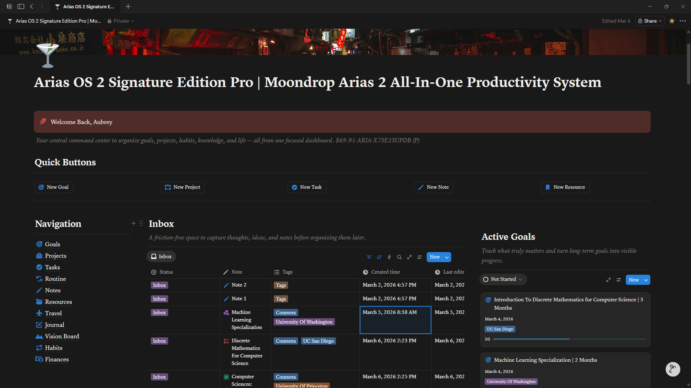

I'm unsure how to communicate what I've done this week, It's been loud and proud, I made some progress that can only be described as bold, I'm repicking up the pace after slowing down the past two weeks.
To begin, throughout the past two weeks, my notes have been spread throughout paper & documents, and a large mess, however recently I've come upon a Notion Template called Life OS Pro that has been a lifesaver, I've began building up a routine for consistent progress, as well as organizing my projects & sub-projects.
I've been attempting to budget and preserve my allowance further alongside my advancements in my projects & organization, I've had issues drawing diagrams on my laptop and have begun saving for a Tab S10 that I plan to use alongside my laptop.
Skipping past my hardware and environment improvements, I've began making progress on my Algorithm Visualizer, I've finished building the simple foundation for Merge, Radix, Selection, Insertion Sort & Began researching ways to make a minimal rendering engine.

I've made some minor improvements on my Portfolio as well, nothing major, I added a scrollbar to the Projects, Skills & Blog Overviews, and allowed blogs to overflow allowing me to pack significantly more text within each blog, this can be seen here as this blog is significantly larger than the rest.
Last but not least, I've been preparing to ramp up my extracurriculars & rigor, to begin with education, I've decided to resign up for Pre-Calculus 11, this permits me to take Calculus 12 over the summer, hopefully entailing to me freeing up a bonus slot for Ap Statistics 12, I've also signed up for Pre-Calculus 11 & Physics 12 online via the Surrey Academy Of Innovative Learning.
Additionally, I've discovered the prescence of Coursera, and have signed up for some entry-level courses that I wish to soon bleed and snowball into Intermediate courses, including "Machine Learning Specialization" by the University Of Washington, "Computer Science: Algorithms, Theory, and Machines" offered by Princeton, and last but not least, "Introduction to Discrete Mathematics for Computer Science Specialization" from UC San Diego, I've selected these various courses to help me begin branching out from my foundation and grow on all fronts to gain the basic skills necessary for further development of my Algorithm Visualizer.
It's hard to express how I feel about this week, It's been the spark on the wire and I'm definitely regaining progress, I simply hope to keep it up, I understand It's not always great to be grinding as It's not possible to maintain that for two entire years, however as of right now I am hopeful to finish the foundation as quick as possible so I can accelerate my learning and projects and climb higher than I've ever been.
I'm starting to begin to I can do this, as I'm managing to finally pass my great barrier with most projects and life goals which is simply, maintaining progress after the initial adrenaline of beginning something major or interesting finally dies out.
Lastly, I've got some large plans, in addition to tacking on all of these new responsibilities, I wish to begin participating in more contests, I wish to potentially found a computer science club at Earl Mariott Secondary as we currently lack one, and I hope to make up for missing the Cayley, Pascal & Galois by attending the Fermat & Hypatia. I wish to attend the CCC & several other competitions to really test the water & see how I stand in the world right now.
I should not rush it however, because if I am a president of a club, I naturally need to show leadership and maybe up to a dozen people & plan contests & more.